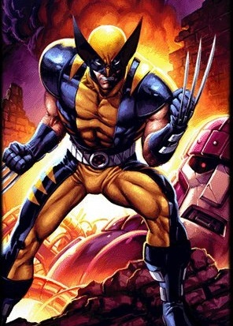

Железный человек
«Железный человек»
(англ. Iron Man) — научно-фантастический боевик 2008 года, рассказывающий о приключениях одноимённого персонажа комиксов компании Marvel. Фильм снят кинокомпанией Marvel Studios под руководством Джона Фавро, а роль главного героя — Тони Старка, промышленника и гениального изобретателя, разработавшего экзоскелет для побега из плена и позже ставшего супергероем по имени Железный человек, исполнил Роберт Дауни-младший. Также в картине сыграли Гвинет Пэлтроу, Терренс Ховард, Джефф Бриджес, Лесли Бибб, Шон Тоуб, Фаран Таир, Кларк Грегг, Пол Беттани и Тим Гини.

Человек-паук
«Человек-паук»
(англ. Spider-Man), настоящее имя Пи́тер Па́ркер (англ. Peter Parker) — персонаж, супергерой, появляющийся в комиксах издательства Marvel Comics, созданный Стэном Ли и Стивом Дитко. С момента своего первого появления на страницах комикса Amazing Fantasy №15 (рус. Удивительная фантазия, август 1962) он стал одним из самых популярных супергероев. Ли и Дитко задумывали персонажа как подростка-сироту, воспитанного дядей и тётей, совмещающего жизнь обычного студента и борца с преступностью. Человек-паук получил суперсилу, увеличенную ловкость, «паучье чутьё», а также способность держаться на отвесных поверхностях и выпускать паутину из рук с использованием прибора собственного изобретения.
s

Росомаха
«Росомаха»
(англ. Wolverine), настоящее имя — Джеймс Хоулетт (англ. James Howlett), также известный как Логан (англ. Logan) — вымышленный персонаж, супергерой комиксов издательства Marvel Comics.Росомаха — мутант, имеющий сверхчеловеческие способности. Он обладает регенерацией, которая позволяет ему выживать после тяжёлых ранений, смертельных для обычного человека.Большинство ядов и болезней также не могут убить и нанести тяжёлый вред здоровью Росомахи. Его способность также повышает выносливость и ловкость, обостряет его органы чувств, замедляет старение организма.

Капитан Америка
«Капитан Америка»
(англ. Captain America; настоящее имя — Сти́вен Ро́джерс (англ. Steven Rogers) — вымышленный персонаж супергерой комиксов издательства Marvel Comics. Один из самых известных персонажей в мире комиксов.Он был создан писателем Джо Саймоном и художником Джеком Кирби и впервые появился в комиксах 1940-х, Timely Comics. За годы по разным оценкам около 210 миллионов копий комиксов «Captain America» было продано в общей сложности в 75 странах.Капитан Америка — это целенаправленно созданный патриотический персонаж. Его часто изображали сражающимся с гитлеровской коалицией государств.